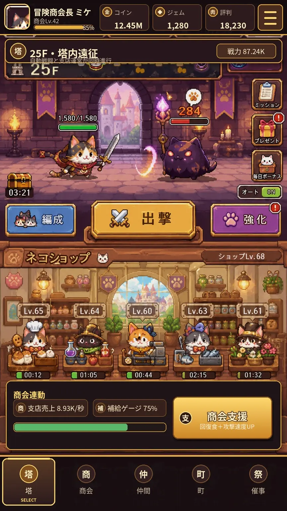

DESIGN REVIEWS02 GOLDEN MASTERNOT RUNTIME

REFERENCE INPUT構造・質感の入力。Golden Masterではありません。本番資産制作前の視覚設計です。画面内の数値はレイアウト検証用で、保存・課金・サーバー接続を示しません。
DESIGN REVIEW ONLY · 切替は保存・通信・報酬付与を行いません。
REVIEW POINTS
採用: 温かい木材、真鍮、塔の奥行き。
不採用: 小さい戦場、単独猫、商業導線の主役化、全画面一枚絵。